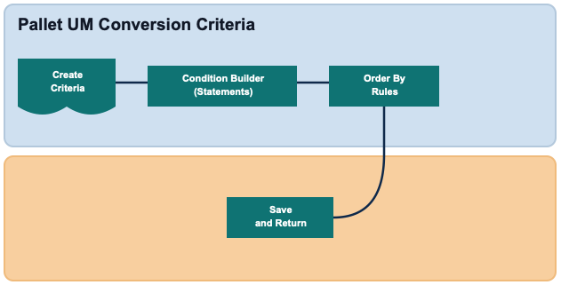

Pallet UM Conversion Criteria defines the filter used to identify eligible records and the ordering rules used to evaluate those records. This configuration is completed in a three-step guided flow: Create, Condition Builder, and Order By.

Define the filter identity details used by the Pallet UM Conversion Criteria configuration.
Filter Name is required and validated for uniqueness in new mode.
Description is optional. If left blank, the value defaults to the Filter Name when you continue.
In change mode, Filter Name is read-only and can only be reviewed.
Use Back to return to the criteria list, Save to save and return to Wave configuration, or Continue to define conditions.
Define selection logic in the Condition Builder for record type PALLETUMCONVERSIONCRIT.
Add condition statements to control which records are evaluated.
Use available value helpers for supported attributes, including location-based values.
Use Back to return to Create, Save to save and return to Wave configuration, or Continue to define sorting.
Define the sequence in which matching records are evaluated.
Add one or more order-by rows for Attribute and Asc/Desc.
Sequence is maintained internally to preserve the configured rule order.
Select Continue to save criteria details and return to the Wave Picking Group flow.